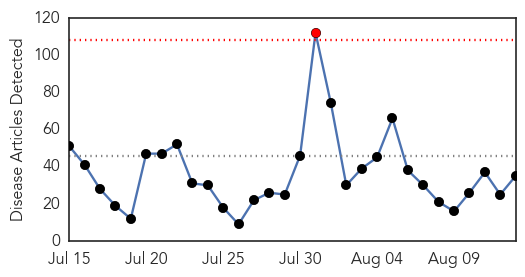
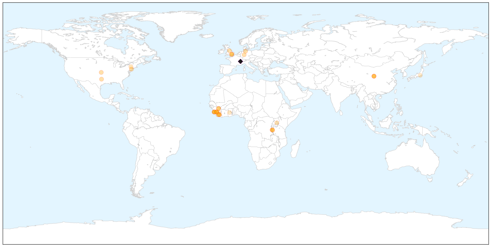
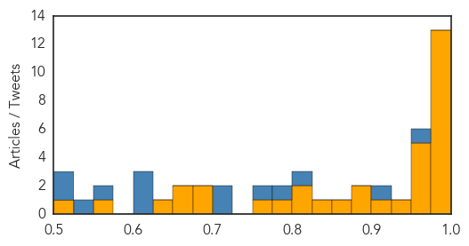
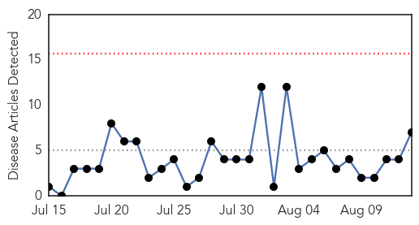
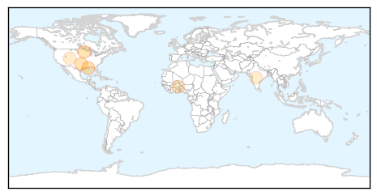
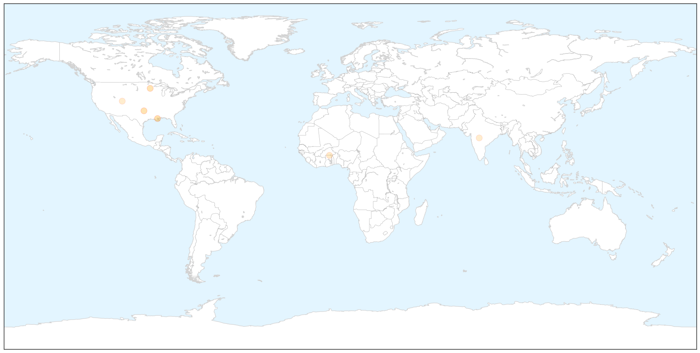

Ebola
30-Day Web Trend
1 alerts, 0 warnings

30-Day Twitter Trend
0 alerts, 0 warnings

Article Locations

X

Article Confidences
Top Articles:
- 0.999
- How proposed Ebola biobank would strengthen African science, by researchers
- 0.998
- 'I survived Ebola but NINE of my family died so I want to stop others suffering'
- 0.998
- Ebola Fear Goes Viral Over ‘Patient Zero’ in Dallas
- 0.996
- Handwashing in W African schools protects children, families from Ebola
- 0.996
- CDC chief: Why I have hope about 2015 Ebola fight
- 0.995
- Lassa fever virus has ‘very ancient roots’, traced back a millennium to what is now Nigeria
- 0.994
- Handwashing in W African schools protects children, families from Ebola
- 0.994
- Ebola Situation Report
- 0.992
- World Health Organization: Ebola situation report
- 0.989
- 'Highly unlikely' Ebola cause of Burundian refugee death in Tanzania: UN - United Republic of Tanzania
- 0.988
- Ebola epidemic could be defeated by end of 2015: UN health chief
- 0.984
- UN official: Ebola epidemic could be defeated by end of 2015 - MyNorthwest
- 0.979
- Are we prepared for the next Global Epidemic? the public doesn’t think so
- 0.973
- "We can be proud that the international community rallied to support the efforts to defeat Ebola."
- 0.973
- Kenya refuses refuge to chimps from Ebola-hit Liberia
- 0.972
- A Call for More Scrutiny on How Ebola Aid Money Gets Spent in Sierra Leone
- 0.955
- United Republic of Tanzania: 'Highly unlikely' Ebola cause of Burundian refugee death in Tanzania: UN
- 0.952
- Losing girls: post Ebola in Sierra Leone
- 0.932
- ‘Unlikely’ Ebola cause of Burundian refugee death in Tanzania: UN
- 0.901
- Wang Yi wraps up visit to ...｜Politics｜WCT
- 0.898
- The Vineyard Gazette - Martha's Vineyard News
- 0.882
- MPs quiz health officials over sh2b Ebola funds
- 0.867
- The Case For Ebola Coming From a Bioweapons Lab
- 0.838
- Better policies are needed to support local adoptions for children orphaned by Ebola
- 0.818
- Female mobiliser fights tooth and nail to eradicate Ebola
- 0.804
- Chorus grows for reform in vaccine development process
- 0.788
- Community Quick Impact Project Launched - Liberia
- 0.757
- Vaccine for common childhood infection may finally be possible
- 0.685
- World Bank Regional Director Pays Courtesy Call on President Koroma
- 0.678
- First human trial of new vaccine for common childhood infection shows promise
- 0.666
- ADRA Liberia donates US$1.2m medical equipment
- 0.663
- Tackling the Ebola outbreak in rural areas of Guinea - Guinea
- 0.640
- Ebola spurs creation of Japan's first maximum-security biolab : Nature News & Comment
- 0.570
- Page not found
- 0.503
- Liberia Has Miraculously Stood up from "Sickbed"
Top Tweets:
- 0.951
- Dr Chan: New [Ebola] cases in Liberia hv stopped. Guinea & Sierra Leone hv together reported only 3 cases during each of the past 2 weeks
- 0.900
- Dr Chan on Ebola: West African nations have dealt bravely and boldly with the outbreak receiving magnificent support from across Africa
- 0.818
- Many Ebola survivors experience "post-Ebola" symptoms. An Ebola Survivors Clinic is now open in Monrovia Liberia http://t.co/6PAy6SFVK4
- 0.782
- MPs quiz health officials over sh2b Ebola funds - New Vision http://t.co/dku5VN7O6p ebola EVD
- 0.766
- Dr Chan on Ebola: [West African nations] have mounted a vaccine clinical trial in Guinea and early results have been extremely encouraging
- 0.718
- Dr Chan on Ebola: Most agree that the lack of public health capacities and infrastructures created the greatest vulnerability
- 0.709
- Dr Chan on Ebola: WHO is putting together a blueprint for the rapid development of new medical products for any future outbreak
- 0.623
- Dr Chan on Ebola: The outbreak by far the largest longest & most severe ever known shook the world & challenged the intl community
- 0.621
- 'Highly unlikely' Ebola caused Burundian refugee death in Tanzania: UN - eNCA http://t.co/SCN8fEh49R ebola EVD
- 0.617
- 'Unlikely' Ebola cause of Burundian refugee death in Tanzania: UN - Yahoo News http://t.co/LMNrnq68gl ebola EVD
- 0.561
- A cure for the Ebola crisis in sight? - SFGate (blog) http://t.co/ySkwU9arPl ebola EVD
- 0.547
- Quinnipiac University Assistant Professor Nears End of Ebola Monitoring Period - NBC Connecticut http://t.co/59dY34Gyij ebola EVD
- 0.520
- With Ebola cases petering out will trial of the drug ZMapp run out of time? - CTV News http://t.co/qKe1cYE4DL ebola EVD
- 0.516
- 'Highly unlikely' Ebola cause of Burundian refugee death in Tanzania: UN - The Guardian Nigeria (s... http://t.co/5KzmdDRwwM ebola EVD
Meningitis
30-Day Web Trend
0 alerts, 0 warnings

30-Day Twitter Trend
2 alerts, 0 warnings

Article Locations

X

Article Confidences

Top Articles:
- 0.971
- Boy Was Not Killed by Brain-Eating Amoeba in Minnesota Lake, Officials Say
- 0.917
- Oklahoma resident dies from Naegleria infection, contracted amoeba in Lake Murray
- 0.901
- Family 'devastated' after 3-year-old dies from meningitis
- 0.898
- Swimmer dies after contracting brain-eating amoeba in Oklahoma lake
- 0.650
- Human health vulnerability to climate change in Ghana
- 0.576
- Mesa County Health Department is encouraging college students to get their vaccinations before school starts
- 0.576
- Asia is expected to show high growth rates by 2020
Top Tweets:
-
No tweets found for Aug 13, 2015